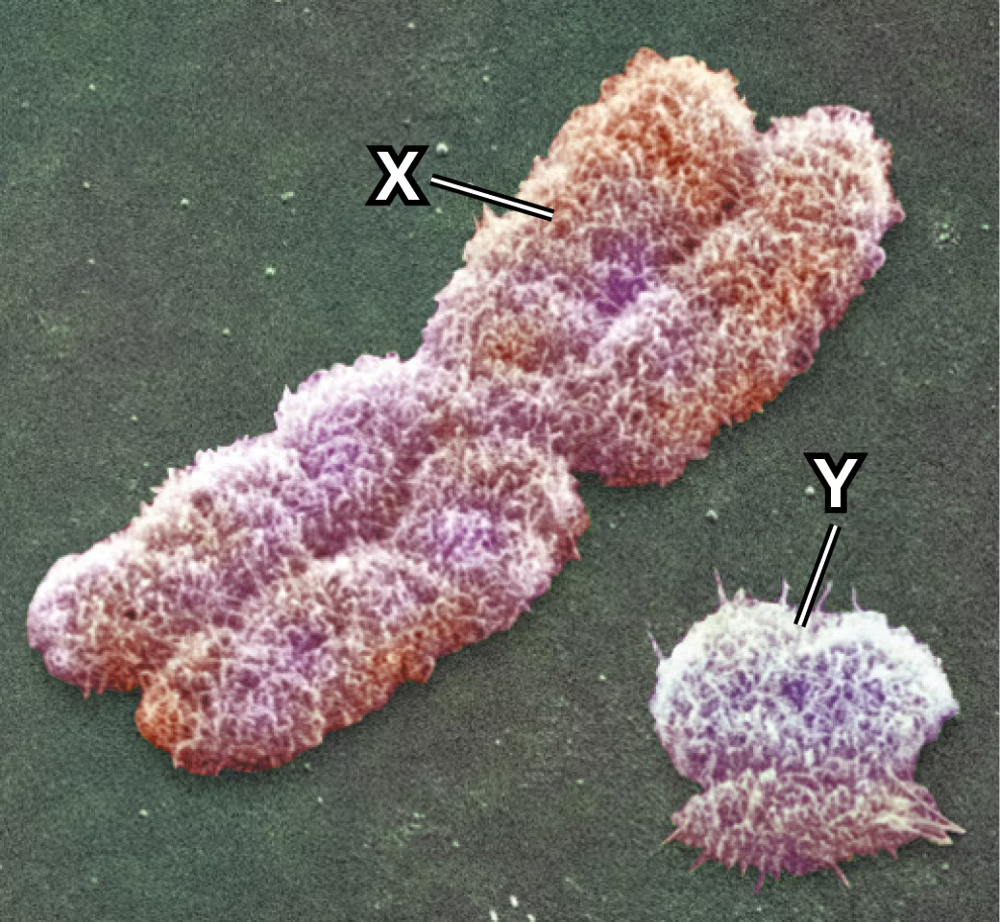
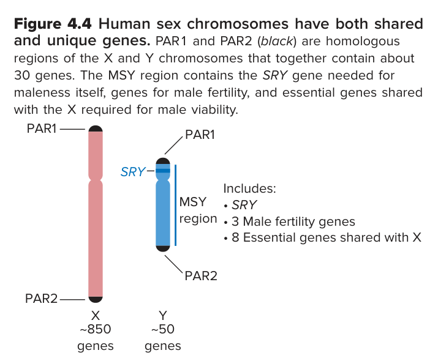
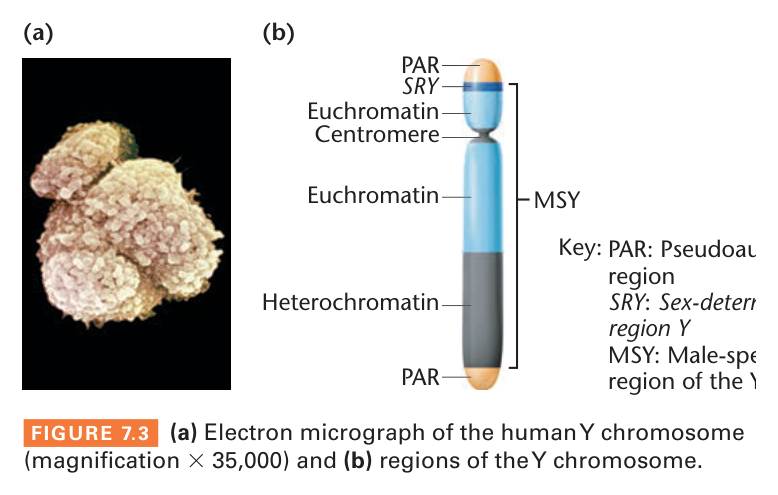
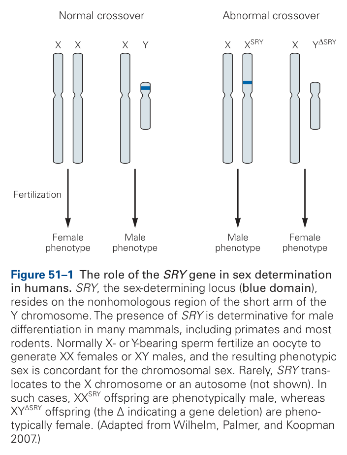

人類 XY 染色體會聯會和互換嗎？PAR 局部配對、SRY 易位與第 23 個四分體
課本裡的同源染色體兩條長得一模一樣，但男性的 X 與 Y 染色體一大一小、基因幾乎不同——它們在減數分裂時到底能不能聯會與互換？如果 SRY 跑到 X 上算易位還是互換？複製後的 XY 二分體聯會算不算四分體？
X 與 Y 的頭尾兩端各有一小段同源 DNA 序列（PAR1、PAR2），減數分裂前期 I 會靠這裡局部聯會並互換；其餘約 95%（Y 染色體男性特異區 MSY）則不聯會也不正常互換。
正常發生在 PAR 內叫互換；但 SRY 位在 Y 的非同源區（緊鄰 PAR1），一旦切越界把 SRY 移到 X 上，屬非同源區段異常搬家、改變連鎖群，故歸為易位（造成 46,XX 男性與 46,XY 女性）。
複製後的 X（1 個二分體）與 Y（1 個二分體）聯會成 1 個 X–Y 二聯染色體（X–Y bivalent），含 2 條染色體、4 條染色分體，在正典教科書中一律計為人類 23 個四分體之一（共 92 條染色分體）。
01 XY 染色體哪裡會聯會？哪裡不會？
先看一眼真正的 X 與 Y 染色體：X 染色體很長、帶有約 800～900 個蛋白質編碼基因；Y 染色體非常短小，只有約 50～60 個基因（Brooker 8e Ch04）。兩條長得完全不像，為什麼在男性睪丸進行減數分裂 I 時還能像同源染色體一樣配對並分開？
秘密在於兩條染色體的「頭尾兩端」。演化上，X 與 Y 原本來自一對相同的體染色體，雖然中間大部分區段後來分道揚鑣，但兩端各保留了一小段序列相同的區域，叫做偽體染色體區（pseudoautosomal regions，簡稱 PAR1、PAR2）。你可以把 PAR 想像成兩條染色體頭尾的「同源對接口」，減數分裂前期 I 就靠這兩小段完成聯會與互換。
| 區域名稱 | 位置與佔比 | 減數分裂 I 行為 | 基因與遺傳特徵 |
|---|---|---|---|
| 偽體染色體區 （PAR1、PAR2） |
X 與 Y 的短臂與長臂兩端 （約佔 Y 染色體 5% 以下） |
會聯會、會互換，形成交叉（chiasma） | X 與 Y 上共有約 30 個相同基因（如 SHOX、MIC2），遺傳方式像體染色體一樣（故名「偽體染色體」） |
| Y 染色體男性特異區 （MSY，舊稱 NRY） |
Y 染色體其餘約 95% 區域 | 不聯會、不發生正常互換 | 含決定睪丸發育的 SRY 基因與生育力基因，正常情況下只隨 Y 染色體由父傳子 |
互換不只是為了「增加子代變異」，它還有一個更關鍵的物理任務——把配對的兩條染色體暫時繫在一起。減數分裂中期 I 需要靠聯會與互換形成的交叉（chiasma）搭配姊妹染色分體黏連，讓兩極紡錘絲拉出穩定張力，X 與 Y 才能準確分往兩極（一半精子得 X、一半得 Y）。若這一步配對或分離失敗（無分離），就會產生同時帶 X 與 Y 的精子，受精後形成 47,XXY 的克氏症候群。

🔍 點擊圖片可全螢幕放大
🔍 點擊圖片可全螢幕放大02 SRY 跑到 X 上，算「易位」還是「互換」？
決定男性生殖腺發育成睪丸的總開關——SRY 基因——位於 Y 染色體短臂上，而且位置緊貼著 PAR1 邊界（圖 3）。正常減數分裂時，互換只發生在 PAR1 內部，不會動到 SRY。但如果配對重組時不小心「切越界」，把鄰近的 SRY 移轉到 X 染色體上，就會產生兩種罕見的性別反轉案例（圖 4）：
- 帶有 SRY 的 X 染色體受精 → 46,XX 男性（染色體組成是 XX，但因有 SRY 而發育為男性，通常不孕因缺乏其他 Y 染色體生精基因）。
- 缺失 SRY 的 Y 染色體受精 → 46,XY 女性（Swyer 症候群）。
這時很多高中生會卡關：既然是在 X、Y 減數分裂配對時出錯交換過去的，這到底算「易位」還是「互換」？ 抓住遺傳學的黃金判準就不會混亂：
| 情境 | 發生位置 | 歸類判準 | 原因與正典教科書說法 |
|---|---|---|---|
| 正常交換 | PAR1／PAR2 同源區內部 | 互換（crossing over） | 同源區段之間對等交換對應等位基因，連鎖群不變，屬於減數分裂前期 I 的正常程序（Klug Ch07、Solomon 11e Ch11）。 |
| 異常把 SRY 移到 X 上 | 越過 PAR1 邊界，動到 Y 專屬非同源區（MSY） | 結果歸為「易位」 （機制稱「異常重組／異常互換」） |
SRY 位於非同源區，原本 X 沒有該基因座；將非同源區基因異常搬到另條染色體、改變連鎖群，依 Pierce 7e Ch08 定義屬染色體結構突變。故 Raven 13e 與 Kandel 6e 直接稱為「SRY 易位至 X 染色體」；Goldberg 7e 則從發生過程稱為「中節與 PAR1 間的異常重組」。 |

🔍 點擊圖片可全螢幕放大
🔍 點擊圖片可全螢幕放大03 複製後的 X、Y 二分體聯會，算不算第 23 個四分體？
算！人類不論男女，初級生殖母細胞在減數分裂前期 I 一律計為 23 個四分體（共 92 條染色分體），絕不是「男性只有 22 個」。
你可以用三個白話標準直接檢查：
- 名詞與數目完全吻合：課本裡的二聯染色體（bivalent，大學譯本常作二價體／雙價體）與四分體（tetrad）指的是同一個構造——「二聯」看的是 2 條聯會染色體，「四分體」看的是合計 4 條染色分體（2 個二分體）。複製後的 X 是 1 個二分體（2 條姊妹染色分體），複製後的 Y 也是 1 個二分體（2 條姊妹染色分體），合起來確實是 2 條染色體、4 條染色分體。
- 遺傳學正典直接稱它為「X–Y 二聯體」並計入總數：Goldberg 7e 在 Ch03 定義 bivalent＝tetrad，並於 Ch05 習題 16（雄性初級精母細胞減數分裂圖）直接稱它為 X–Y 二聯體（X–Y bivalent），明明白白計入雄性總數（小鼠 n = 20 個二聯體、類比人類雄性 n = 23 個二聯體）。Solomon 11e、Sadava 12e、Vander 16e 也全都寫人類有 23 個四分體／二聯體，全資料庫查無任何教科書寫「男性只有 22 個四分體」。
- 差別只在「全長貼齊 vs. 兩端貼合」：22 對體染色體是整條從頭到尾全長聯會；第 23 對（X、Y）屬於異型性染色體，只在兩端 PAR 局部聯會，中間未配對區會呈歪斜狀。但它們仍作為單一配對單位在中期 I 排隊並分向兩極，所以計數與功能上都是第 23 個四分體。
| 比較項目 | 22 對體染色體四分體 | 第 23 個四分體（X–Y 二聯染色體） |
|---|---|---|
| 染色體與染色分體數 | 2 條染色體（2 個二分體）＝ 4 條染色分體 | 2 條染色體（X 二分體＋Y 二分體）＝ 4 條染色分體 |
| 聯會方式 | 沿染色體全長聯會 | 僅於兩端偽體染色體區（PAR1、PAR2）局部聯會 |
| 正常互換範圍 | 全長各處同源區皆可能互換 | 僅限兩端 PAR 內部（約 95% MSY 不正常互換） |
| 減數分裂 I 分離行為 | 靠交叉繫住，後期 I 拉向兩極 | 同樣靠 PAR 交叉繫住，後期 I 使 X 與 Y 分往兩極 |
04 經典英文原文教科書逐句考證
以下所有英文段落均原封不動摘自 Vault 正式譯本，方便高中老師備課或同學對照大學原典核查。
[Solomon 11e Ch. 11] "Nevertheless, the Y chromosome has short, homologous 'pairing regions' at its tips that lets it synapse and exchange genetic material with the X chromosome during meiosis."
[Solomon 11e Ch. 10] "In an animal cell with a diploid number of 4, there are 2 tetrads (and a total of 8 chromatids); in a human cell at prophase I, there are 23 tetrads (and a total of 92 chromatids)."
[Solomon 11e] 末端短小同源「配對區域」使 Y 在減數分裂時與 X 聯會並交換遺傳物質；人類前期 I 細胞計有 23 個四分體（共 92 個染色分體）。
[Kandel 6e Ch. 51] "Conversely, in rare instances, SRY translocates to another chromosome (to the X chromosome or an autosome) during spermatogenesis. Such sperm can fertilize eggs to produce individuals who are chromosomally female (XX) but externally male."
05 高中教學、常見陷阱與查證邊界
① 問「XY 會不會聯會／互換？」→ 會，但僅限兩端偽體染色體區（PAR）。
② 問「男性初級精母細胞有幾個四分體？」→ 23 個（22 個體染色體全長聯會四分體＋1 個 X–Y 局部聯會二聯染色體）。
③ 問「SRY 跑到 X 上造成 XX 男性？」→ 單選二選一答易位；申論寫「減數分裂異常重組導致含 SRY 片段易位至 X 染色體」最無懈可擊。
常見命題陷阱與術語提醒
- 陷阱 1：「因為 X、Y 大小不同，男性初級精母細胞只有 22 個四分體」→ 錯，X–Y 局部聯會仍計為第 23 個四分體（X–Y 二聯染色體）。
- 陷阱 2：「演化教材寫 Y 染色體不重組，所以 X、Y 完全不能互換」→ 錯，「不重組」指的是佔 95% 的 MSY 區段，兩端 PAR 仍會正常重組。
- 審定名詞：臺灣教育部《生命科學名詞》審定為偽體染色體區（pseudoautosomal regions）、二聯染色體（bivalent）、二分體（dyad）、四分體（tetrad）、染色分體（chromatid）。
本頁主軸論點（PAR1/PAR2 局部聯會互換、95% MSY 不重組、SRY 異常重組／易位、X–Y bivalent 計入 23 個四分體）皆有上述 8 部正典原文段落白紙黑字支持。進階分子遺傳學數據如「PAR1 約 2.6–2.7 Mb、PAR2 約 320–330 kb」、「PAR1 強制互換（obligate crossover）統計率」、「XY 體（XY body／sex vesicle）與 MSCI 機制」及專詞 heteromorphic bivalent 目前在 Vault 譯本中查無原文，屬外部學術常識邊界。